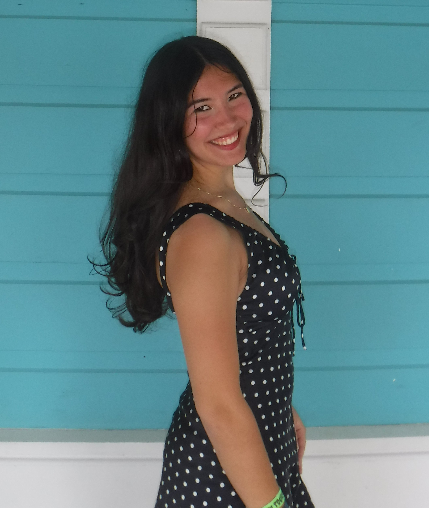

cdessent@uoregon.edu | (520)-272-5509 | LinkedIn
I'm currently a first year student at the University of Oregon Lundquist College of Business, with an interest in finance, data analysis, and computer science. Through internships at Shaffer & Danker CPA's and HJ3 Composite Technologies, I have gained experience in accounting operations, organizing financial records, and working with digital databases. These roles have taught me the importance of attention to detail, organization, and clear communication in the workplace. I value hard work, collaboration, and reliability, and am excited to continue growing both academically and professionally.